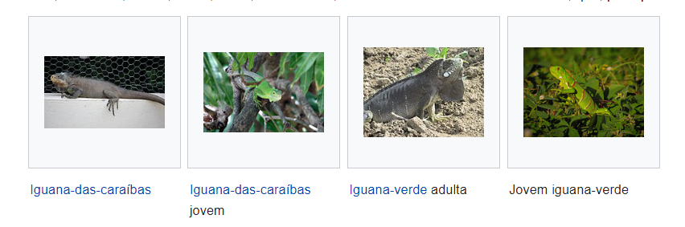

Iguana
Nome científico: Iguana
Características de uma iguana
- Habita em regiões tropicais.
- Vivem principalmente em árvores entre 10 a 13 anos, em média.
- Alimentam-se de pequenos insetos e roadores, lesmas, frutas e vegetais.
- Podem atingir ate 170cm de comprimento.
- Ovíparo.
Tipos de iguana mais comuns
